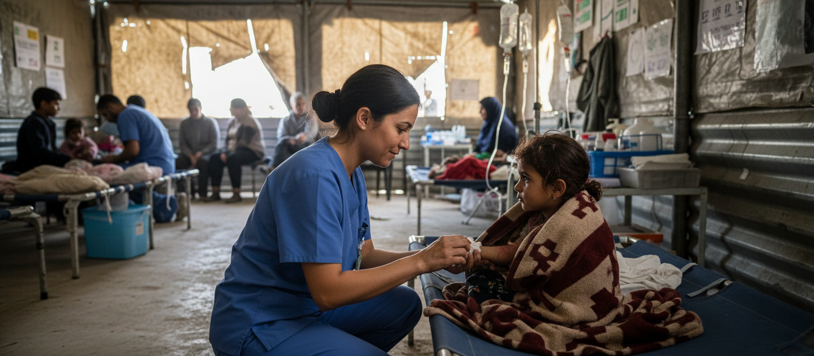
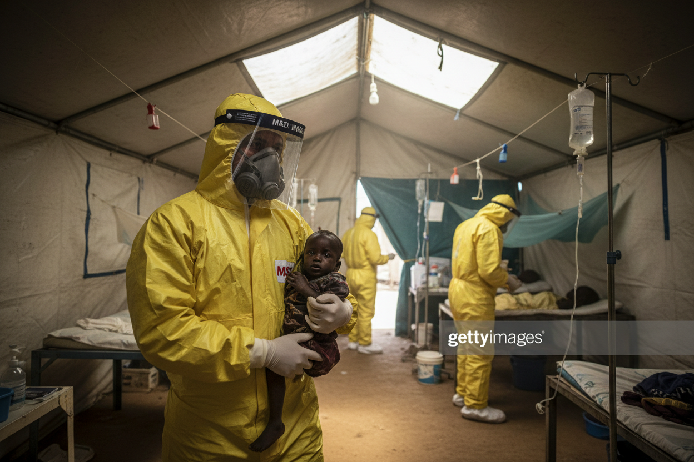
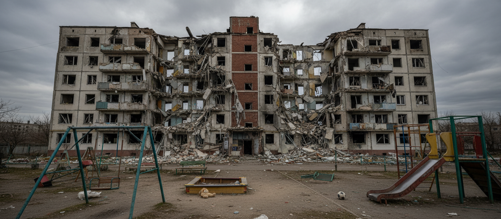

Gaza: schoon drinkwater en eten

Artsen Zonder Grenzen geeft in Gaza medische zorg, ook nu de internationale aandacht afneemt. Teams opereren, helpen met bevallingen, helpen hongerige kinderen en helpen mensen met schoon drinkwater.

Artsen zonder Grenzen zorgt voor medische noodhulp op plekken waar de zorg is ingestort of niet beschikbaar is: oorlogsgebieden, vluchtelingenkampen, epidemieën en natuurrampen.

Artsen Zonder Grenzen geeft in Gaza medische zorg, ook nu de internationale aandacht afneemt. Teams opereren, helpen met bevallingen, helpen hongerige kinderen en helpen mensen met schoon drinkwater.

In Oekraïne blijven mensen slachtoffer van explosies, beschietingen en luchtaanvallen. Artsen Zonder Grenzen geeft daar medische en psychologische zorg, staat elke dag klaar en geeft hulp voor een conflict dat al jaren duurt.
Elke maand help je ons sneller te reageren op crisissen, noodhulp te verlenen en mensen in acute nood te bereiken.
Organiseer een actie, loop mee, doneer met vrienden of zet je netwerk in voor mensen in nood.
Een nalatenschap zorgt voor langdurige impact en helpt ons ook in de toekomst mensen in nood te bereiken.
Er zijn veel manieren om Artsen zonder Grenzen te steunen. Hieronder zie je hoe een review over die betrokkenheid eruit kan zien.
Op mijn manier bijdragen
“Met een maandelijkse gift kan ik iets betekenen voor mensen die medische hulp nodig hebben. Het voelt goed om op een vaste manier bij te dragen.”
Samen iets in beweging zetten
“Een sponsorloop met vrienden organiseren bracht ons samen. Iedereen deed op zijn eigen manier mee, met één gezamenlijk doel: medische noodhulp steunen.”
Weten waarvoor je het doet
“De verhalen over het werk van de teams maken voor mij duidelijk waarom medische noodhulp zo belangrijk is. Daarom wil ik betrokken blijven.”
Heeft u vragen over onze missie of wilt u meer weten over hoe u kunt helpen? We staan u graag te woord.